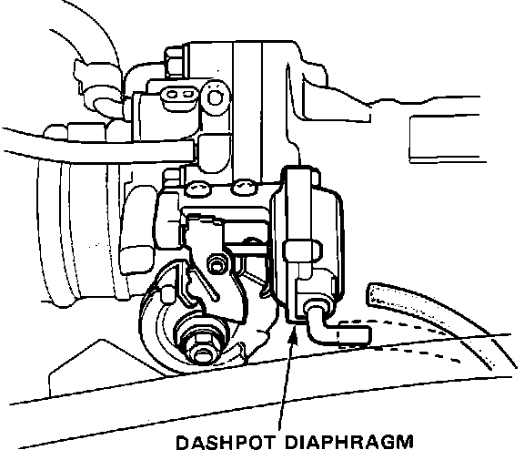
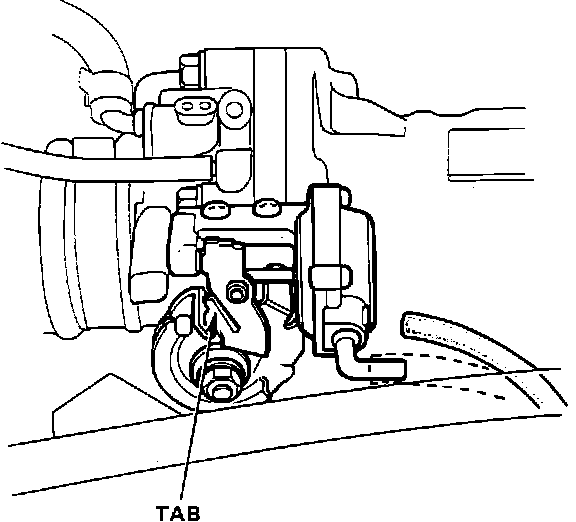
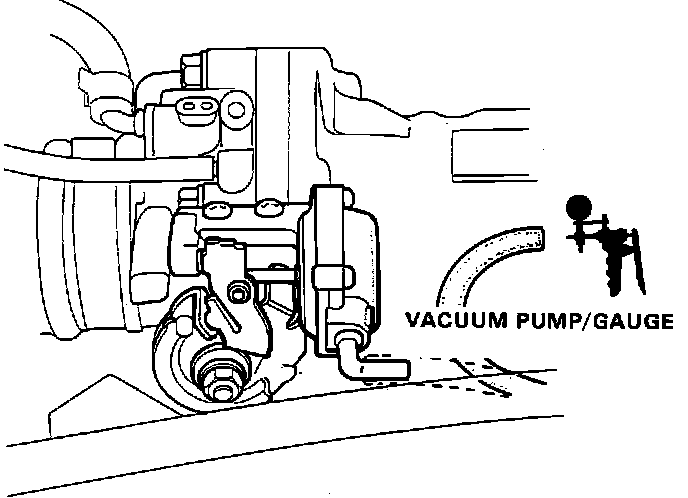

Dashpot: Testing and Inspection
1. Start the engine and warm it to normal operating temperature (the cooling fan comes ON).2. Place transmission in PARK or NEUTRAL.
Dashpot Diaphragm:

3. Disconnect the vacuum hose from the Dashpot diaphragm and check the idle speed. Idle speed should be:
2500 +- 500 RPM.
Adjustment Tab:

4. If the engine speed is excessively high, adjust the engine speed by bending the TAB.
Dashpot Testing:

5. If the engine speed does not change, connect a vacuum gauge to the vacuum hose and check for vacuum.
There should be vacuum.
6. If no vacuum exists, check the vacuum hose for proper connection, cracks, blockage, disconnection. Also check the three-way connector located in the vacuum hose for any cracks or leaks.
7. If vacuum does exist, replace the Dashpot diaphragm and retest.
8. Reconnect the vacuum hose and recheck idle speed. Idle speed (in NEUTRAL) should be:
Manual Trans 750 +- 50 RPM
Automatic Trans 700 +- 50 RPM
9. If idle speed is not within specifications see "IDLE SPEED ADJUSTMENT" in "ADJUSTMENT PROCEDURES".